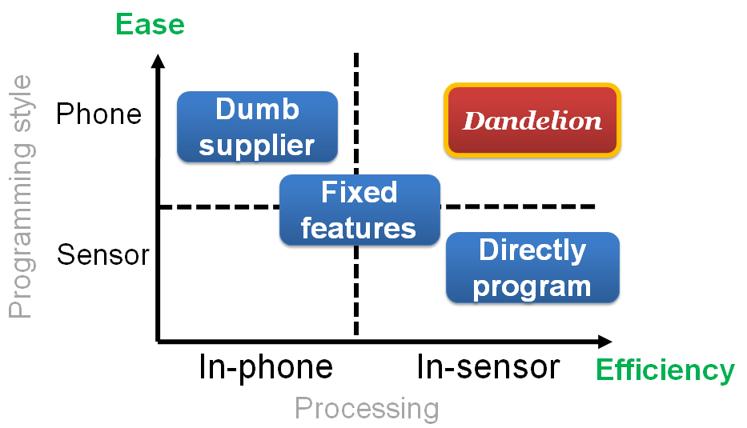
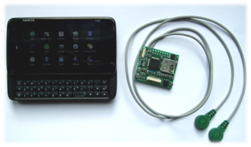

Dandelion is a programming framework of phone-centered body sensor
applications. It enables phone developers transparently write body
sensor
applications, without learning how to program sensors.
Many innovative mobile health applications can be enabled by augmenting
wireless body sensors to mobile phones, e.g. monitoring personal
fitness with
on-body accelerometer and EKG sensors. However, it is difficult for the
majority of smartphone developers to program wireless body sensors
directly;
current sensor nodes require developers to master node-level
programming,
implement the communication between the smartphone and sensors, and
even learn
new languages. The large gap between existing programming styles for
smartphones and sensors prevents body sensors from being widely adopted
by
smartphone applications, despite the burgeoning Apple App Store and
Android
Market.
To bridge this programming gap, we present Dandelion, a novel framework
for
developing wireless body sensor applications on smartphones. Dandelion
provides
three major benefits: 1) platform-agnostic programming abstraction for
in-sensor data processing, called senselet, 2) transparent integration
of
senselets and the smartphone code, and 3) platform-independent
development and
distribution of senselets.
We provide an implementation of Dandelion on the Maemo Linux smartphone
platform and the Rice Orbit body sensor platform. We evaluate Dandelion
by
implementing real-world applications, and show that Dandelion
effectively
eliminates the programming gap and significantly reduces the
development
efforts. We further show that Dandelion incurs a very small overhead;
in total
less than 5% of the memory capacity and less than 3% of the processor
time of a
typical ultra low power sensor.

The figure above shows our motivation to design Dandelion.
While treating sensors as dumb suppliers is easy to smartphone
developers, it incurs high energy overhead (frequently wake up the
phone's processor, transfer the raw data over the wireless link, etc.).
Directly programming both sensors and the phone ensures the
energy-efficiency, however it is very difficult for phone developers to
manage. In addition, computing fixed features in sensors does not offer full programmability
of in-sensor processing.
By enabling transparently developing sensor body applications,
Dandelion seeks to achieve both the energy-effiency and the ease-of-programming.
Please refer to our Wireless Health '10 paper for more technical details.

We build Dandelion prototype based on Nokia N900 smartphone and Rice Orbit sensor platform. We are working to make Dandelion codebase publicly available.